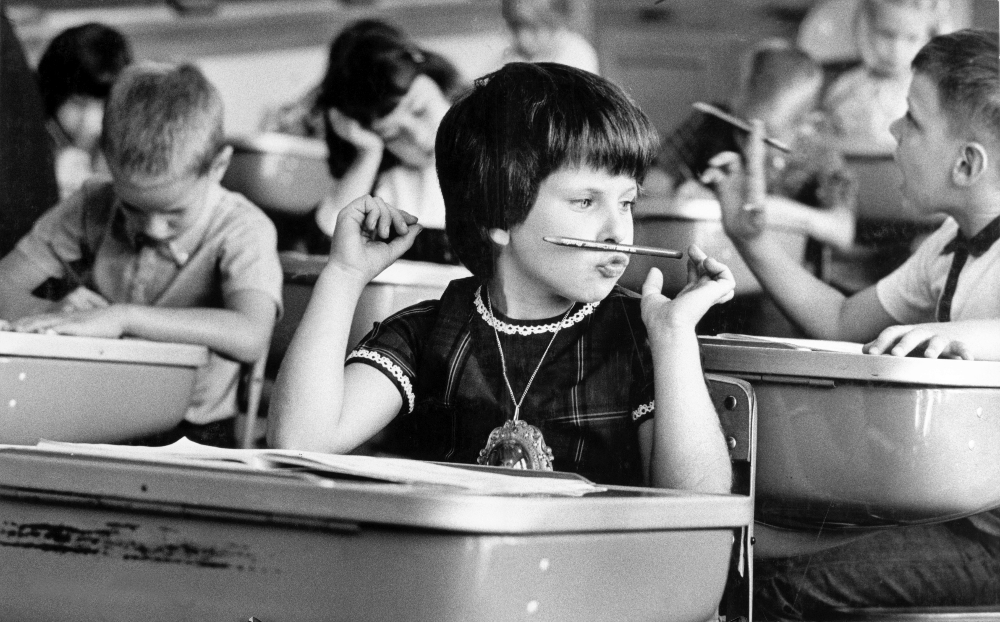
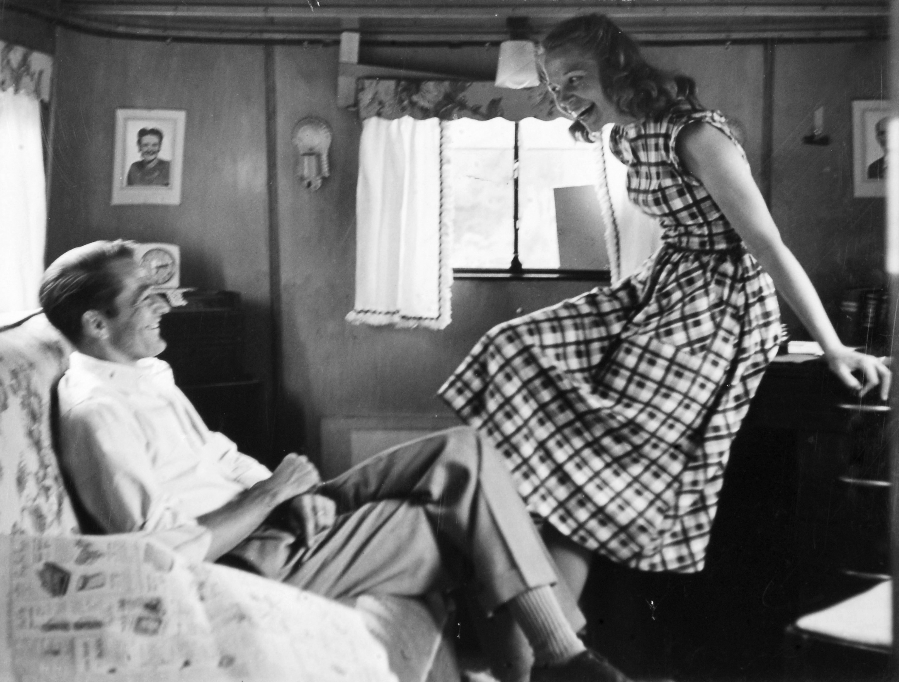

Common Themes Represented in the Missouri Photo Workshop Exhibit
The Missouri Photo Workshop teaches photographers to tell visual stories that are intimate and compelling. The photographers apply the lessons they learn to report on stories about contemporary life. These stories touch upon a wide range of topics, including social issues, environmental concerns and local culture. Personalizing these topics by following a subject closely for a week makes the issues easier for viewers to comprehend and the reporting more powerful. Not all Missouri Photo Workshop stories relate to a larger issue. Some stories focus on individuals and capture what their life is like at this time.

Daily Life
Workshop photographers are challenged with finding interesting stories in small communities filled with people going about their daily lives. The photographers find excellent stories about the day-to-day routines that are the heartbeat of a community. Examples include townsfolk interacting at a coffee shop, or a group of teens gathering on a weekend night. These mundane, regular happenings can reveal a lot about a person.

Overcoming Challenges
While small town life can appear idyllic to outsiders, these towns are not immune to the problems that people face across America. Several brave community members have willingly shared their struggles with mental and physical health, poverty, abuse, addiction and incarceration. These stories reflect the people’s realities and help provide a complete picture of what citizens are going through.

Family Dynamics
Many families include complex relationships that can be rewarding and frustrating. Workshop photojournalists learn to observe the big and small moments that can contribute to an overall narrative. Over the years, stories have focused on family members who rise to challenges as well as those who struggle to connect to the people in their life.